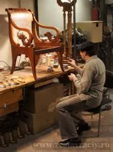
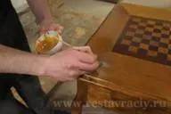
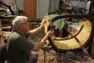
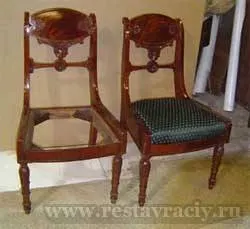

Обучение
Мастер класс реставрации мебели
Мастерская поводит индивидуальные мастер классы по восстановлению вещи заказчика.


Формат и стоимость из программы
Индивидуальное двухчасовое занятие на вещи заказчика в программе оценено в 5 000 ₽. Расходные материалы мастерская предоставляет.
Авторский лекционный курс Елены Жилиной из шести занятий в этом материале стоит 15 000 ₽. По окончании предусмотрен сертификат. Даты и условия участия уточняют в мастерской.
В материале мастерской
Фотографии и детали



Открыть снимок у мастерской


Открыть снимок у мастерской


Открыть снимок у мастерской
Посмотреть снимки с сайта мастерской 3
Оригинальные фотографии откроются здесь с сайта мастерской.
 Открыть снимок у мастерской
Открыть снимок у мастерской  Открыть снимок у мастерской
Открыть снимок у мастерской  Открыть снимок у мастерской
Открыть снимок у мастерской Есть похожая вещь?
Подберите ракурсы для предварительной оценки.